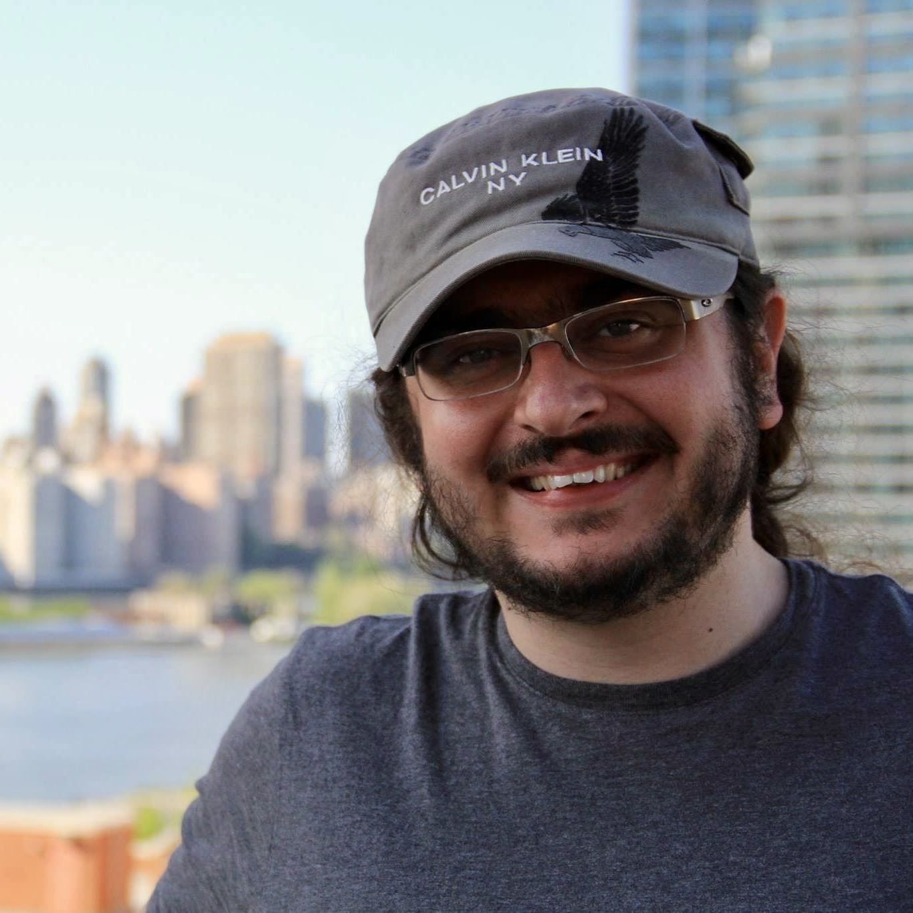
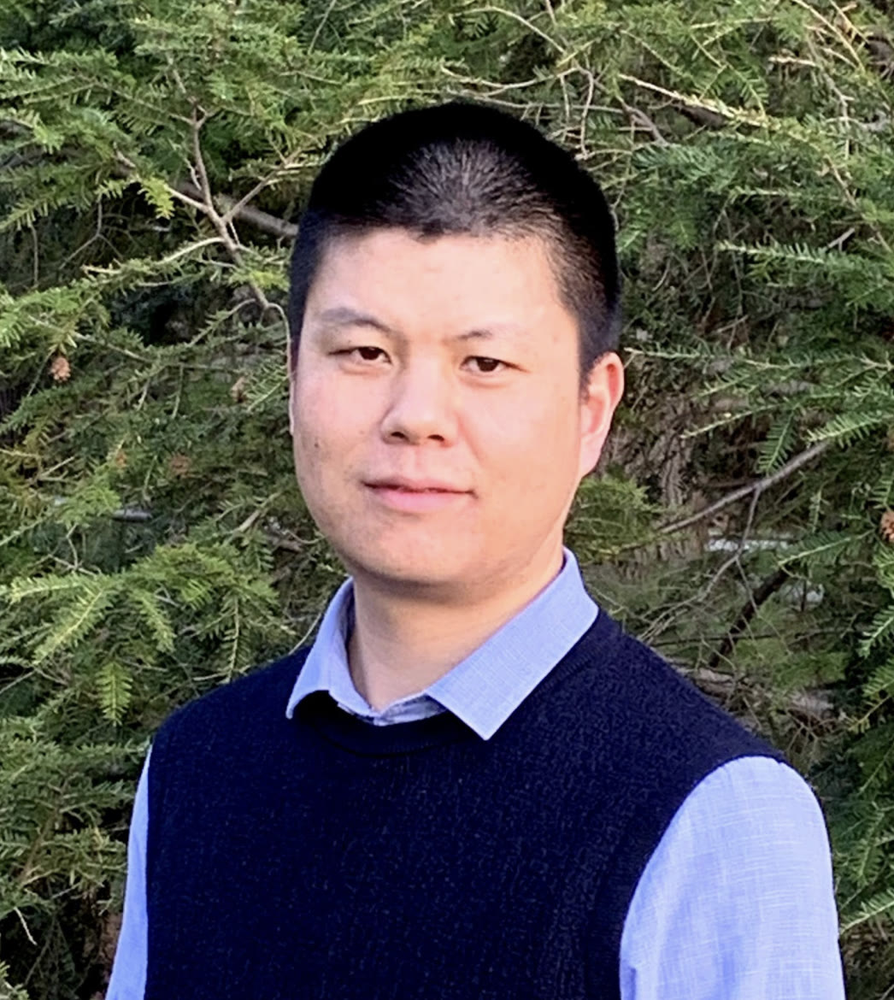

Workshop: SAVES
Title: Securing Autonomous Vehicle Ecosystems and Supply Chains (SAVES) Workshop
📅 Date: May 7, 2026
📍 Location: FINTECH 516, 591 Collaboration Way, Newark, DE 19713 (Google Map)
Workshop Schedule
🕘 9:00 AM – 9:10 AM: Opening Remarks
📖 Talk Title: Leveraging Large Multimodal Modals for Robust and Explainable Autonomous Vehicle Security
Autonomous vehicle (AV) perception systems are increasingly susceptible to adversarial threats that imperceptibly manipulate sensor inputs, potentially leading to critical failures while evading detection. To address this, recent research explores how advanced AI architectures can not only improve robustness but also bring interpretability to AV safety systems. One direction investigates the use of large multimodal models (LMMs) to detect visually deceptive traffic signs crafted by generative models. These models, by combining visual and textual inputs, prove far more reliable than traditional DNNs. Other efforts center on vision-language models fine-tuned for AV perception tasks. Finally, large language models are applied to structured driving scenarios to provide interpretable, regulation-aware explanations for potential threats.
🧑🔬 Bio: Mert D. Pesé is an Assistant Professor of Computer Science and Founding Director of the TigerSec Laboratory at Clemson University. He received his Ph.D. from the University of Michigan and holds multiple degrees from the Technical University of Munich. His research focuses on AV security, generative AI, and automotive data privacy. He has received several awards and collaborated with major automotive companies.

📖 Talk Title: Hardening the Software Supply Chain: Practical Post-Compilation Defenses
Modern software systems increasingly rely on large, complex codebases and third-party dependencies, making them susceptible to supply-chain attacks. This talk presents post-compilation adaptation techniques such as Nibbler (for binary-level debloating), sysfilter (for system call policy enforcement), and BinWrap (a hybrid defense for Node.js). These approaches aim to reduce attack surfaces and enhance software pipeline security.
🧑🔬 Bio: Vasileios (Vasilis) Kemerlis is an Associate Professor at Brown University. His research spans OS security, automated hardening, and hardware-assisted defenses. His work has been adopted by major companies and open-source projects and recognized with several awards. He holds a Ph.D. from Columbia University and has worked with Oracle and Microsoft.

📖 Talk Title: Towards Secure LiDAR Perception for Autonomous Vehicles
LiDAR technology is crucial in AV perception but vulnerable to adversarial attacks. This talk introduces two practical attack strategies using common objects to deceive LiDAR models and presents a defense mechanism to detect and mitigate such threats.
🧑🔬 Bio: Dr. Chenglin Miao is an Assistant Professor at Iowa State University. He received his Ph.D. from SUNY Buffalo and works on secure AI techniques for mobile, embedded, and networked systems. His research has appeared in top venues and received awards like the Distinguished Paper Award at ACSAC 2023.